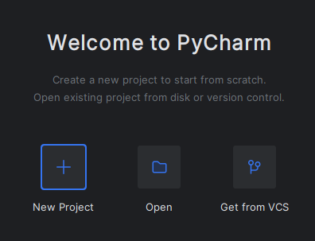
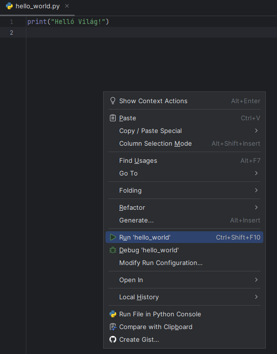
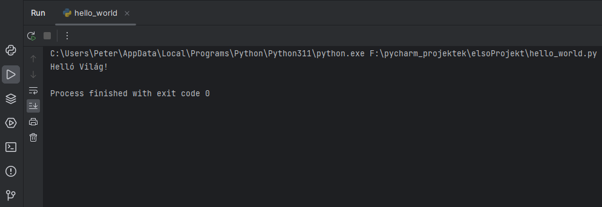
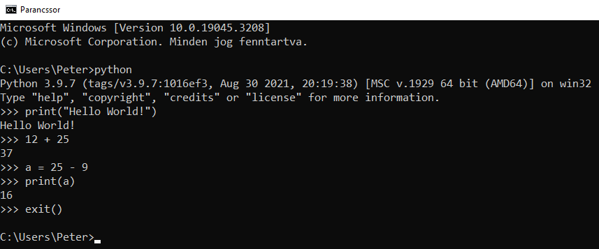
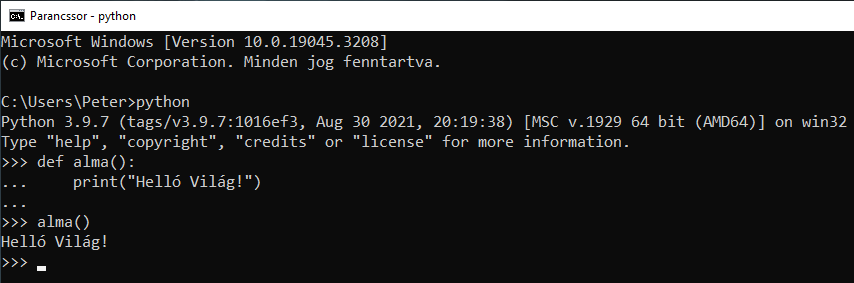

A témakör célja, hogy megismerkedjünk a Python-nal.
- Szintaktika szabályok.
- A Python az utasításokat az újsor (new line) karakterrel zárja!
- Törekedjünk az "egy sor = egy utasítás" elv betartására!
- A hatókör (scope) kijelölésére a behúzást (indendation) használja!
- Írjuk meg a "Helló Világ!" programunkat!
- Mi az a REPL (Read, Eval, Print, Loop)?
A következőkre nagyon figyeljünk:
Indítsuk el a PyCharm-ot, és nyissunk egy új projekt-et elsoProjekt néven. Állítsuk be azt a mappát, ahová a projektjeinket menteni fogjuk. Vegyük ki a pipát a main.py-nál! Állítsuk be az interpreter-t.


Hozzuk létre a hello_world.py állományt! Írjuk be az egyeten sort, majd jobb egérgomb lenyomása után válasszuk ki a Run 'hello_world utasítást!


A megnyíló terminálablakban láthatjuk a kimenetet. Az első sorban az alkalmaztott interpreter és az állomány neve olvasható. Alatta a megjelenítendő szöveg található!
Ugyanerre az eredményre jutunk, ha a menüsorban megnyomjuk a kis jobbra mutató zöld nyilat.


Ha rövid kódrészleteket szeretnénk kipróbálni, futtatni, akkor használjuk az úgynevezett REPL szerkesztőt. Ehhez nyissuk meg a parancssort (command line), majd írjuk be a python (vagy py) szót azután nyomjunk egy enter-t. Itt soronként tudjuk beírni az utasításokat, majd enter-t ütve végrehajtani azt.

Többsoros utasítás beviteléhez használd a shift + enter billentyűkombinációt!

Kilépni az exit() utasításal tudunk.